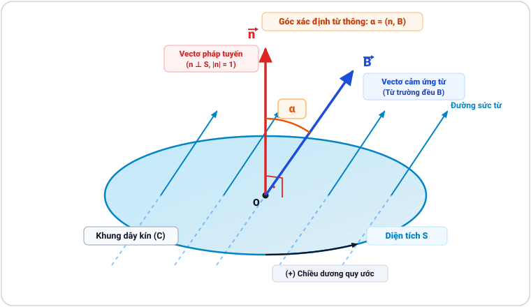
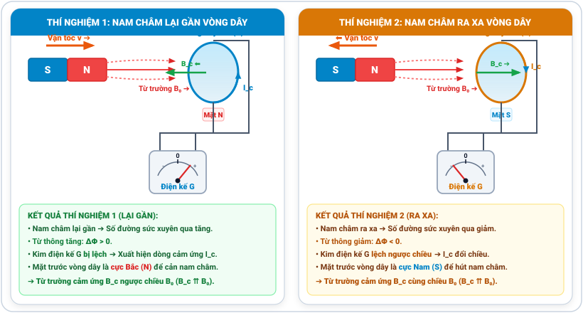

Bài 16: Từ Thông. Hiện Tượng Cảm Ứng Điện Từ

Hiện tượng cảm ứng điện từ: Khi từ thông qua mạch biến thiên, dòng điện cảm ứng xuất hiện chống lại nguyên nhân sinh ra nó
NỘI DUNG BÀI HỌC
1. Khái Niệm Từ Thông ($\Phi$)
Từ thông ($\Phi$) là đại lượng vật lý đặc trưng cho số lượng đường sức từ xuyên qua một diện tích bề mặt phẳng $S$ đặt trong từ trường đều $\vec{B}$.
• $B$: Cảm ứng từ ($\text{T}$).
• $S$: Diện tích bề mặt khung dây ($\text{m}^2$).
• $\alpha = (\vec{n}, \vec{B})$: Góc hợp bởi vectơ pháp tuyến $\vec{n}$ của khung dây và cảm ứng từ $\vec{B}$.
• Với cuộn dây gồm $N$ vòng dây: $\Phi = N \cdot B \cdot S \cdot \cos\alpha$.
• Đơn vị từ thông trong hệ SI là Vêbe (kí hiệu: $\text{Wb}$): $1\text{ Wb} = 1\text{ T} \cdot 1\text{ m}^2$.

Hình 16.1: Đường sức từ xuyên qua diện tích \(S\) giới hạn bởi khung dây kín \((C)\).
vatli102.comCác trường hợp xác định giá trị của từ thông theo góc \(\alpha = (\vec{n}, \vec{B})\):
• Khi \(\alpha = 0^\circ\) (\(\vec{B}\) cùng hướng \(\vec{n}\), \(\vec{B} \perp (S)\)):
\(\cos 0^\circ = 1 \Longrightarrow \Phi_{\max} = B \cdot S\) (Từ thông đạt cực đại).
• Khi \(0^\circ < \alpha < 90^\circ\) (\(\alpha\) là góc nhọn):
\(\cos\alpha > 0 \Longrightarrow \Phi > 0\) (Từ thông có giá trị dương).
• Khi \(\alpha = 90^\circ\) (\(\vec{B} \perp \vec{n}\), \(\vec{B} \parallel (S)\)):
\(\cos 90^\circ = 0 \Longrightarrow \Phi = 0\) (Đường sức từ song song mặt phẳng khung dây, không xuyên qua \(S\)).
• Khi \(90^\circ < \alpha \le 180^\circ\) (\(\alpha\) là góc tù):
\(\cos\alpha < 0 \Longrightarrow \Phi < 0\) (Khi \(\alpha = 180^\circ \Rightarrow \Phi_{\min} = -B \cdot S\)).
• Trong công thức $\Phi = B \cdot S \cdot \cos\alpha$, góc $\alpha$ bắt buộc phải là góc giữa vectơ cảm ứng từ $\vec{B}$ và vectơ pháp tuyến $\vec{n}$ của mặt phẳng khung dây: $$\alpha = (\vec{n}, \vec{B})$$
• BẪY ĐỀ BÀI RẤT HAY CHO: Đề bài thường cho góc $\beta$ là góc hợp bởi vectơ cảm ứng từ $\vec{B}$ và mặt phẳng khung dây (mặt phẳng vòng dây): $$\beta = (\vec{B}, (S))$$
👉 Khi đó, vì vectơ pháp tuyến $\vec{n} \perp (S)$ nên ta phải tính góc $\alpha$ theo công thức:
*Ví dụ:* Đề bài cho $\vec{B}$ hợp với mặt phẳng khung dây góc $30^\circ$ ($\beta = 30^\circ$) ➔ Góc $\alpha = 90^\circ - 30^\circ = 60^\circ$ ➔ $\Phi = B \cdot S \cdot \cos 60^\circ$ (nếu học sinh lấy nhầm $\cos 30^\circ$ sẽ bị sai kết quả!).
2. Hiện Tượng Cảm Ứng Điện Từ & Thí Nghiệm Khảo Sát
2.1. Thí nghiệm khảo sát hiện tượng cảm ứng điện từ

Hình 16.2: Thí nghiệm khảo sát hiện tượng cảm ứng điện từ: Thí nghiệm 1 (Đưa nam châm lại gần vòng dây) và Thí nghiệm 2 (Kéo nam châm ra xa vòng dây).
vatli102.com• Thao tác: Đưa cực Bắc ($N$) của thanh nam châm tiến lại gần vòng dây dẫn kín.
• Biến thiên từ thông: Số đường sức từ xuyên qua vòng dây tăng lên $\Longrightarrow$ Từ thông tăng ($\Delta\Phi > 0$).
• Hiện tượng quan sát: Kim điện kế $G$ bị lệch sang một phía, chứng tỏ xuất hiện dòng điện cảm ứng $I_c$.
• Tương tác từ: Mặt trước vòng dây xuất hiện cực Bắc ($N$) sinh ra từ trường cảm ứng $\vec{B}_c$ ngược chiều $\vec{B}_0$ để đẩy nam châm (chống lại sự dịch lại gần).
• Thao tác: Kéo thanh nam châm lùi ra xa vòng dây dẫn kín.
• Biến thiên từ thông: Số đường sức từ xuyên qua vòng dây giảm đi $\Longrightarrow$ Từ thông giảm ($\Delta\Phi < 0$).
• Hiện tượng quan sát: Kim điện kế $G$ bị lệch sang chiều ngược lại, chứng tỏ dòng điện cảm ứng $I_c$ đảo chiều.
• Tương tác từ: Mặt trước vòng dây xuất hiện cực Nam ($S$) sinh ra từ trường cảm ứng $\vec{B}_c$ cùng chiều $\vec{B}_0$ để hút nam châm (chống lại sự lùi ra xa).
• Trường hợp nam châm đứng yên so với vòng dây: Từ thông qua vòng dây không biến thiên ($\Delta\Phi = 0$) $\Longrightarrow$ Kim điện kế $G$ chỉ số 0, không có dòng điện cảm ứng trong mạch.
THÍ NGHIỆM CẢM ỨNG ĐIỆN TỪ FARADAY & ĐỊNH LUẬT LENZ
Mô phỏng tương tác kéo thả tự do cả Thanh Nam Châm và Cuộn Dây bằng chuột theo phong cách PhET. Khảo sát sự biến thiên từ thông $\Phi(t)$, suất điện động cảm ứng $e_c(t)$, độ sáng bóng đèn, độ lệch kim vôn kế số 0 ở giữa và đồ thị dao động thời gian thực.
• Hiện tượng cảm ứng điện từ: Là hiện tượng xuất hiện dòng điện cảm ứng trong mạch dẫn kín khi từ thông qua mạch dẫn kín đó biến thiên theo thời gian.
• Hiện tượng cảm ứng điện từ chỉ tồn tại trong khoảng thời gian từ thông qua mạch kín đang biến thiên. Khi từ thông ngừng biến thiên, dòng điện cảm ứng biến mất.
Độ lớn của suất điện động cảm ứng xuất hiện trong cuộn dây gồm $N$ vòng tỉ lệ thuận với tốc độ biến thiên từ thông gửi qua cuộn dây:
(Nếu mạch có điện trở $R$, cường độ dòng điện cảm ứng là: $I_c = \frac{|e_c|}{R} = \frac{N}{R} \cdot \left| \frac{\Delta\Phi}{\Delta t} \right|$)
3. Định Luật Lenz Xác Định Chiều Dòng Cảm Ứng
Định luật Lenz: Dòng điện cảm ứng xuất hiện trong mạch kín có chiều sao cho từ trường do nó sinh ra có tác dụng chống lại sự biến thiên của từ thông sinh ra nó.
- • Nếu từ thông tăng ($\Phi \uparrow$): Từ trường cảm ứng $\vec{B}_c$ ngược chiều từ trường ngoài $\vec{B}_0$ để cản sự tăng.
- • Nếu từ thông giảm ($\Phi \downarrow$): Từ trường cảm ứng $\vec{B}_c$ cùng chiều từ trường ngoài $\vec{B}_0$ để bù đắp sự giảm.
4. Dòng Điện Xoáy Foucault & Ứng Dụng
Cuộn sơ cấp ở đế sạc sinh từ trường biến thiên, gửi từ thông biến thiên sang cuộn thứ cấp thu năng lượng ở điện thoại sinh dòng điện cảm ứng sạc pin.
Dòng điện xoáy Foucault xuất hiện trong khối kim loại dày làm hãm phanh êm ái tàu cao tốc, đồng thời tỏa nhiệt nấu ăn trong bếp từ.
5. Bài Tập Trắc Nghiệm Tự Luyện & Lời Giải Chi Tiết
PHIẾU CÂU HỎI TRẮC NGHIỆM GDPT 2018
Câu 1 [Nhận biết]: Đơn vị đo của từ thông trong hệ SI là gì?
- A. Tesla (T).
- B. Henry (H).
- C. Vêbe (Wb).
- D. Vôn (V).
Câu 2 [Vận dụng]: Cuộn dây gồm $N = 400$ vòng, từ thông qua mỗi vòng giảm đều từ $0,15\text{ Wb}$ về $0$ trong $\Delta t = 0,3\text{ s}$. Tính độ lớn suất điện động cảm ứng $|e_c|$?
💡 Lời giải chi tiết:
Áp dụng công thức Faraday: $$|e_c| = N \cdot \frac{|\Delta\Phi|}{\Delta t} = 400 \cdot \frac{0,15}{0,3} = 400 \cdot 0,5 = \mathbf{200\text{ V}}.$$ Đáp số: 200
📌 Công thức từ thông: $\Phi = B S \cos\alpha$ ($\text{Wb}$). Cực đại khi $\alpha = 0^\circ$, bằng $0$ khi $\alpha = 90^\circ$.
📌 Định luật Faraday: $|e_c| = N |\frac{\Delta\Phi}{\Delta t}|$. Suất điện động tỷ lệ thuận với tốc độ biến thiên từ thông.
📌 Định luật Lenz: Từ trường cảm ứng sinh ra để cản trở sự biến thiên từ thông ban đầu.